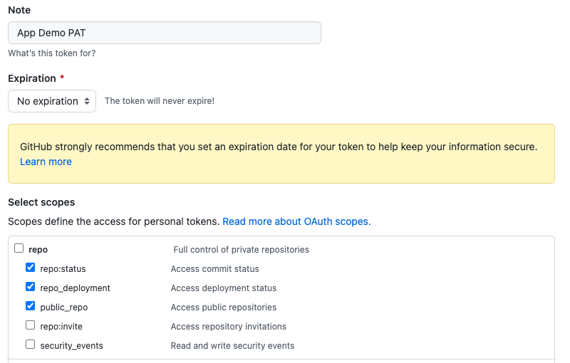

Using Ansible and GitOps to Manage the Lifecycle of a Containerized Application
One of the great advantages of combining GitOps with Ansible is that
you get to streamline the automation delivery and the lifecycle of a
containerized application.
With the abilities of GitOps we get to:
- Standardize configurations of our applications.
- Inherit the benefits of version control of our
configurations.
- Easily track changes of the configuration settings making fixing
issues easier.
- Have one source of truth for our
applications.
Combine the above with Ansible and you have everything you need to
accomplish configuration consistency for a containerized app anywhere
that you automate.
That leads us to, "how do we combine Ansible and GitOps to manage the
lifecycle of a containerized application?"
Simple. By creating an Ansible workflow that is associated with a Git
webhook that is part of my application's repository.
What is a Git webhook you ask?
Git webhooks are defined as a method to deliver notifications to an
external web server whenever certain actions occur on a
repository.
For example, when a repository is updated, this could trigger an event
that could trigger CI builds, deploy an environment, or in our case,
modify the configuration of our containerized
application.
A webhook provides the ability to execute specified commands between
apps over the web. Automation controller provides webhook integration
with GitHub and GitLab, but for the purposes of this blog we will be
integrating with GitHub.
In the following sections of this blog, I'm going to provide the
step-by-step process to:
- Setup your Git webhook (using GitHub).
- Setting up an Ansible workflow that triggers via push events from
your GitHub repository.
Create a GitHub personal access token
The GitHub personal access token (PAT) is one of the credentials needed
to associate the Ansible workflow with your Git
repository.
Generate a personal access token (PAT) for use with automation
controller.
- In the profile settings of your GitHub account, click Settings.
- Below the Personal settings, click Developer Settings.
- In the Developer settings, click Personal access tokens.
- From the Personal access tokens screen, click Generate new token button.
- When prompted, enter your GitHub account password to continue.
- In the Note field, enter a brief description about what this PAT will be used for.
- In the Expiration drop down, select No expiration.
- In the Scope fields, automation controller webhook only needs repo scope access, with the exception of invites. For information about other scopes, click the link right above the table to access the docs.

Click the Generate Token button at the bottom of the page.
Once we have our PAT in place, the next step is to create a Git
repository that will be triggered by our GitHub webhooks when changes
are made to the repository.
For the purposes of this blog, I'll be using my
App Demo Repository.
Feel free to use your own or fork this repository to follow along.
Familiarizing ourselves with the App Demo Repository
The App Demo Repository is fairly simplistic, as it
contains:
container_playbook.ymlgroup_vars/all.ymlrequirements.yml
The container_playbook.yml is a simple playbook that creates a color
container, starts it on a specific port and sets two environment
variables, APP_COLOR and tree.
A sample of that container_playbook.yml:
---
- name: Playbook to setup prereqs
hosts: all
become: true
tasks:
- name: Create a color container
containers.podman.podman_container:
name: colors
image: docker.io/mmumshad/simple-webapp-color:latest
state: started
network: host
ports:
- "{{ host_port }}:{{ container_port }}"
env:
APP_COLOR: "{{ color }}"
tree: "{{ tree }}"
The group_vars/all.yml is where I'll be making modifications to my
Podman container that will trigger changes to the container.
A sample of that group_vars/all.yml file:
color: "BLUE"
tree: "trunk"
host_port: 8080
container_port: 8080
Finally, we have the requirements.yml file that ensures we have the
containers.podman collection available to use within the playbook.
A sample of the requirements.yml:
collections:
- name: containers.podman
With our repository in place and our GitHub PAT set, the next steps
involve creating our Red Hat Ansible Automation Platform resources that
will be triggered when GitHub push events happen in the App Demo
Repository.
Creating our Ansible Automation Platform Resources
Within my automation controller dashboard, I first need to create my
credential resources to ensure that when I create my new project,
workflow and job template -- they can all easily attach my App Demo PAT
credential.
Within the automation controller dashboard:
- Under Resources > Credentials click the blue Add button.
- Provide a Name, e.g. App Demo PAT.
- Select GitHub Personal Access Token as the Credential Type.
- Within Type Details, add the secret using the previously generated token from GitHub.
- Click Save.
Once my App Demo PAT credential is in place, I need an additional
credential to access my host that will be running the Podman container.
In my case, this is an AWS instance.
In order to access this host, I will create a
new credential that stores my AWS private key.
- Under Resources > Credentials click the blue Add button.
- Provide a Name, e.g. My AWS Private Key.
- Select Machine as the Credential Type.
- Within Type Details, add the SSH Private Key in the text area.
- Click Save.
Once the credentials are in place, I need to create an inventory that
stores the details of my AWS instance.
To add details of my AWS instance, I will create an inventory
file.
- Under Resources > Inventories click the blue Add > Add inventory button.
- Provide a Name, e.g. App Demo Inventory.
- Click Save.
- Under Resources > Inventories click App Demo Inventory.
- Click the tab labeled Hosts and click the Add button.
- Provide a Name, e.g. App Demo Host.
Within Variables, provide the following YAML:
---
ansible_host:
ansible_user: ec2-user
With the credentials and inventory resources set, I will create my App
Demo project. The purpose of this project is to create a workflow that
contains a job template that automatically runs every time an update to
the App Demo repository takes place.
This ensures that as I make changes to my Podman container settings
within my Git repository, the container_playbook.yml runs to make the
appropriate changes.
Within the automation controller dashboard:
- Under Resources > Projects click the blue Add button.
- Provide a Name, e.g. App Demo Project.
- Select Default as the Organization.
- Select Default execution environment as the Execution Environment.
- Select Git as the Source Control Credential Type.
- Within Type Details, add the Source Control URL (your GitHub repository).
- Within Options, select Clean, Delete, Update Revision on Launch.
- Click Save.
Next, create a workflow template.
- Under Resources > Templates click the blue Add > Add workflow template.
- Provide a Name, e.g. App Demo Workflow.
- Within Options, checkmark Enable Webhook.
- Within Webhook details, select GitHub as the Webhook Service.
- Within Webhook details, select your GitHub PAT token previously created as the Webhook Credential, e.g. App Demo PAT.
- Click Save.
- Within the Please click the Start button to begin window, click Save at the top right corner.
- Copy the Webhook URL and the Webhook Key as they will be used later.
Enabling GitHub Webhooks for the App Demo Repository
With the Ansible Automation Platform workflow template created and the
GitHub repository with the required files in place, the next step is to
enable webhooks for our repository, e.g. app_demo.
- At the homepage of your GitHub repository, select the Settings tab.
- Within the Settings tab, select Webhooks.
- Within the Webhooks section, select the Add webhook button.
- Enter the Payload URL (Webhook URL of the workflow).
- Change the Content type drop down to application/json.
- Enter the Secret (Webhook key of the workflow).
- Leave the defaults to use push events, and click the button Add webhook.
By default, GitHub verifies SSL certificates when delivering payloads.
If your automation controller SSL certificates are not signed, ensure to
disableSSL verification.
Creating the App Demo job template
The App Demo job template runs the container_playbook.yml file
automatically every time an update to the Git repository takes place.
To create the job template within your automation controller dashboard:
- Under Resources > Templates click the blue Add > Add job template.
- Provide a Name, e.g. App Demo Job.
- Select Run as the Job Type.
- Select App Demo Inventory as the Inventory.
- Select App Demo Project as the Project.
- Select Default execution environment as the Execution Environment.
- Select container_playbook.yml as the Playbook.
- Select Credentials and select My AWS Private Key.
- Within Options, select Enable webhook.
- Select GitHub as the Webhook Service.
- Select your GitHub PAT token previously created as the Webhook Credential, e.g. App Demo PAT.
- Click Save.
Updating the created App Demo Workflow
Previously, the App Demo workflow was created. The purpose of this
workflow is to ensure that the App Demo Project is always in sync and
that the App Demo Job runs the container playbook whenever changes are
made to the App Demo repository.
- Under Resources > Templates, select your template. e.g App Demo Workflow.
- Within the Details section, select the Visualizer tab and click the green Start.
- For Node Type select Project Sync and select the appropriate project, e.g. App Demo Project and click Save.
- Hover over the App Demo Project and select the plus "+" symbol.
- Within the Add Node window, select On Success as to when this node should be executed and click Next.
- Select the App Demo Job as the Node Type and click Save.
- Once brought back to the Visualizer, select the Save button at the top right corner.
Verify App Demo Setup
To test if all is working correctly, head to your host that is running
the Podman container. Once there, the following podman ps command can be
run:
$ sudo podman ps
CONTAINER ID IMAGE COMMAND CREATED STATUS PORTS NAMES
NOTE: The first time you run podman ps, you should have no containers
running as you haven't run the App Demo workflow.
Head over to your App Demo GitHub repository and modify the
app_demo/group_vars/all.yml file where you change the color: "BLUE" to
color: "YELLOW" and git push your changes.
Head over to your automation controller dashboard and you should see the
App Demo workflow running. Once complete, within your host, verify the
container has the changes made:
$ ssh -i </path/to/private-key.pem> ec2-user@<IP>
$ sudo podman exec -it colors env
PATH=/usr/local/bin:/usr/local/sbin:/usr/local/bin:/usr/sbin:/usr/bin:/sbin:/bin
TERM=xterm
container=podman
PYTHON_VERSION=3.7.0
PYTHON_PIP_VERSION=18.0
LANG=C.UTF-8
GPG_KEY=0D96DF4D4110E5C43FBFB17A2A347FA6AA65421D
APP_COLOR=YELLOW
tree=trunk
HOME=/root
Notice how the Podman container is now running and has the color
YELLOW.
Going back to the App Demo repository, change the color from YELLOW to
GREEN and git push your changes.
The automation controller dashboard will run the App Demo workflow and
once complete, you can re-run the same exec command from your host and
see the color has now changed to GREEN.
$ ssh -i </path/to/private-key.pem> ec2-user@<IP>
$ sudo podman exec -it colors env
PATH=/usr/local/bin:/usr/local/sbin:/usr/local/bin:/usr/sbin:/usr/bin:/sbin:/bin
TERM=xterm
container=podman
PYTHON_VERSION=3.7.0
PYTHON_PIP_VERSION=18.0
LANG=C.UTF-8
GPG_KEY=0D96DF4D4110E5C43FBFB17A2A347FA6AA65421D
APP_COLOR=GREEN
tree=trunk
HOME=/root
Conclusion
The goal of this exercise was to show the power of Ansible and GitOps.
Together, they can provide key automation to your containerized
applications.
While in the demo we made a simplistic color value change of our
application, but imagine we applied this for:
- patching our application because of a security threat.
- updating our application to a newer version.
- managing containerized applications at the edge.
And all this doesn't even mention the inherited benefits of:
- Standardizing configurations of our applications.
- Inheriting the benefits of version control of our configurations.
- Easily tracking changes of the configuration settings making fixing
issues easier.
- Have one source of truth for our applications.
The use cases and abilities that both tools provide together are endless.